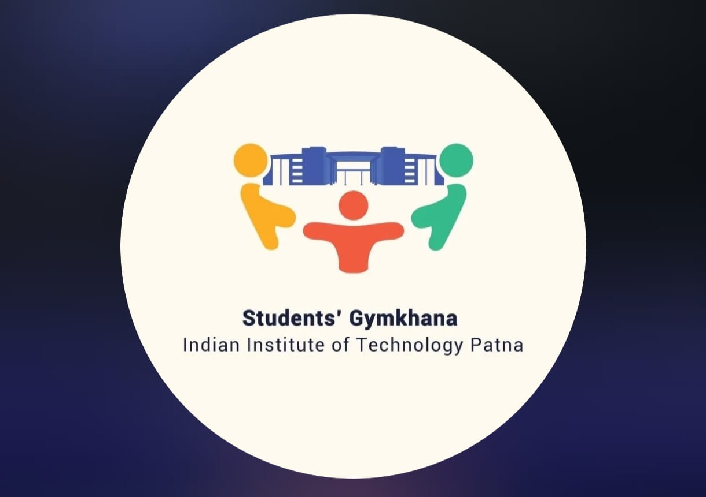

A Career in Civil Engineering
I am an Assistant Professor in the Department of Civil and Environmental Engineering at the Indian Institute of Technology Patna. My academic journey began with a Ph.D. from the prestigious Indian Institute of Science (IISc), Bangalore in 2016, where I specialised in Geotechnical Engineering — the branch of civil engineering concerned with the behaviour of earth materials and their interaction with structures.
My research focuses on the mechanical behaviour of soils and geomaterials, with emphasis on experimental and constitutive modelling approaches. Beyond the laboratory, I am deeply invested in training the next generation of civil engineers — bringing both rigour and practical intuition to the classroom.
In addition to my academic responsibilities, I currently serve as the President of the Students' Gymkhana at IIT Patna, the apex student body of the institute. This role reflects my commitment to student welfare, campus life, and the holistic development of the IIT Patna community.
Geotechnical Engineering
